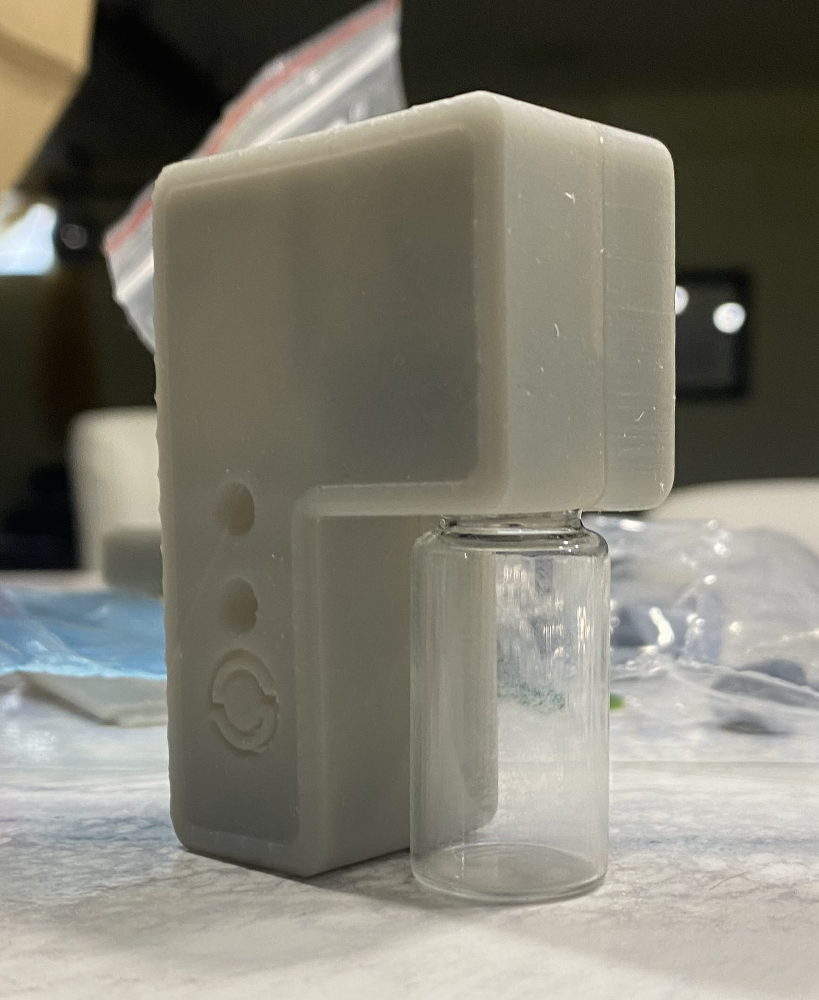
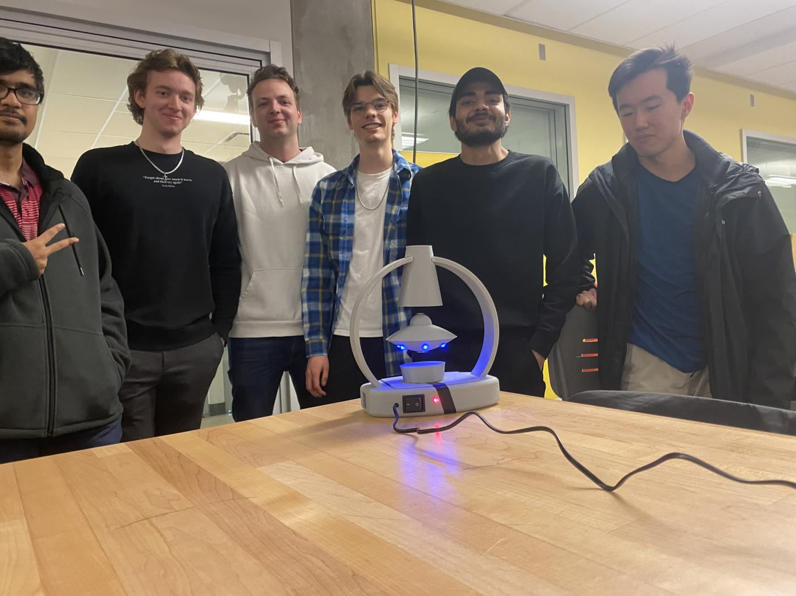

Projects
mcChill
Gold medal winning capstone project: A low power IOT temperature sensor for vaccine monitoring.
Tech: IoT, Antenna design, DFM
Plasma Flame Speaker
A powerful 10 MHz RF amplifier driving a flame-based speaker.

Tech: RF circuits, PCB & Antenna design
Nixie Tube Clock
Retro-inspired clock running on Raspberry Pi Pico with Soviet tubes.

Tech: PCB design, firmware, vintage hardware
Levitating Saucer
Exploring the magic of electromagentics with a wirelessly powered mag-lev saucer lamp.
Tech: Control systems, Power electronics, product design
Plasma donut
Who doesn't like donuts and plasma?
Tech: RF circuits, PCB & Antenna design